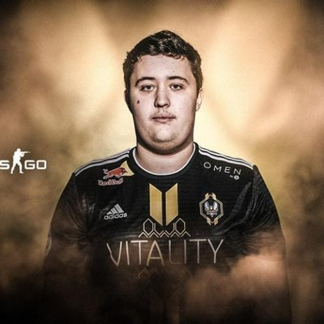

Spis treści
Opis
Mathieu „ ZywOo ” Herbaut (ur. 9 listopada 2000) to francuski zawodnik Counter-Strike: Global Offensive , który obecnie gra w Team Vitality jako AWPer . Jest często uważany za najlepszego gracza Counter-Strike na świecie.
Informacje
- Imie: Mathieu Herbaut
- Data urodzenia: 9.11.2000
- Kraj pochodzenia: Francja
- Drużyna: Team Vitality
- Rola: AWPer
Historia
2014-??-?? - 2015-??-?? dizLown
2016-??-?? - 2016-??-?? nevermind
2017-01-13 - 2017-03-01 E-Corp Bumpers
2017-03-11 - 2017-09-12 WysiX Team
2017-09-12 - 2018-10-06 against All authority
2018-10-08 - Teraz Team Vitality
| Mouse Settings | ||||||
|---|---|---|---|---|---|---|
| Mouse | eDPI | DPI | Polling Rate | Sensitivity | Zoom | Raw Input |
| Xtrfy M4 |
760 | 400 | 1000 Hz | 1.9 | 1 | On |